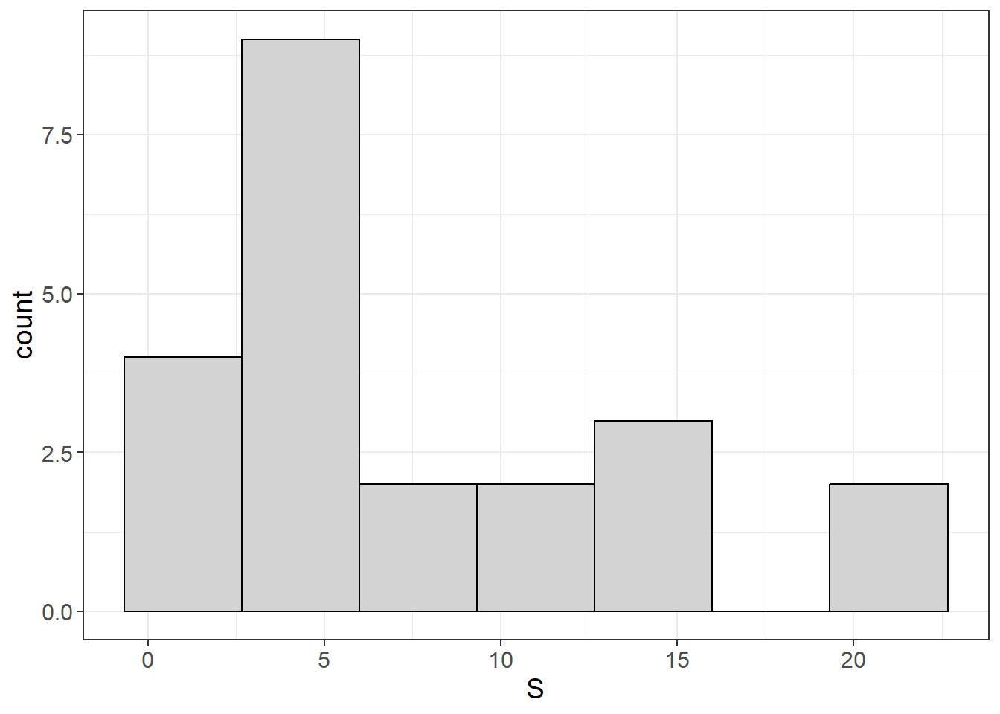
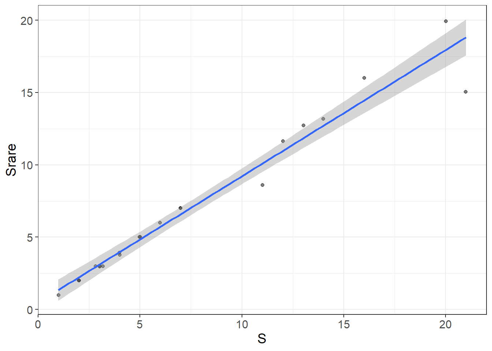
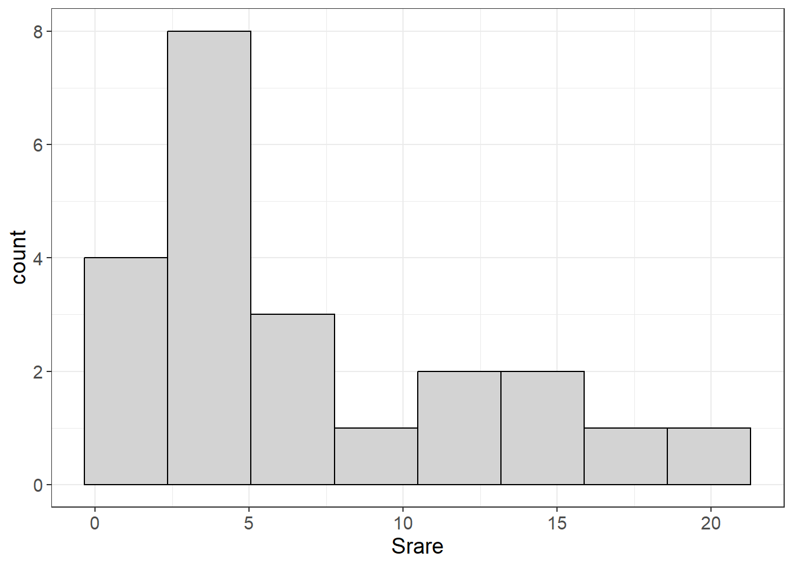
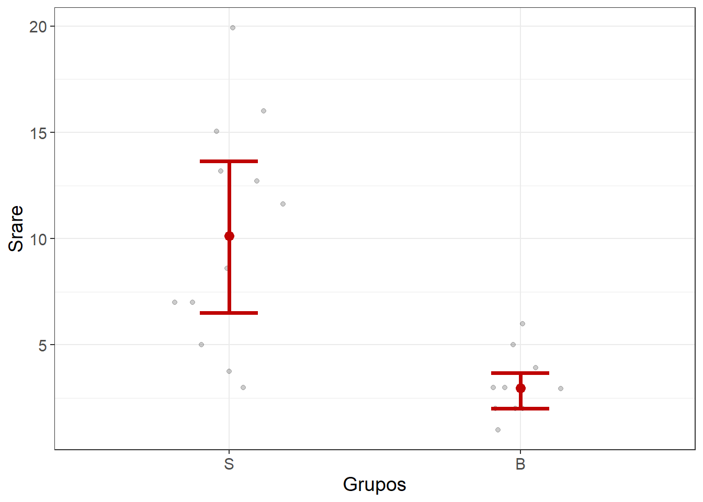

16 Modelos Lineares Generalizados (GLMs)
16.1 Organização básica
dev.off() #apaga os graficos, se houver algum
rm(list=ls(all=TRUE)) #limpa a memória
cat("\014") #limpa o console 16.1.1 Organizando os dados
anovas <- read.csv("t_anovas.csv",
sep = ";", dec = ".",
row.names = 1,
header = TRUE,
na.strings = NA)
anovas <- anovas[, -1]
anovas <- cbind(Grupos = rownames(anovas), anovas)
anovas
grps <- substr(anovas[, 1], 1,1)
grps
library(dplyr)
testt <- mutate(anovas, Grupos = c(grps))
testt
###SALVANDO MATRIZ FINAL ANOVAS----
write.table(testt, "t_test.csv",
sep = ";", dec = ".", #"\t",
row.names = TRUE,
quote = TRUE,
append = FALSE)
testt <- read.csv("t_test.csv",
sep = ";", dec = ".",
row.names = 1,
header = TRUE,
na.strings = NA)
testt## Grupos Srare dens S
## S-R-CI-1 S-R-CI-1 5.000000 1.7857143 5
## S-R-CI-2 S-R-CI-2 12.719603 86.3690476 13
## S-R-CI-3 S-R-CI-3 15.057283 257.4404762 21
## S-R-CI-4 S-R-CI-4 16.000000 57.9761905 16
## B-A-SA-1 B-A-SA-1 2.000000 0.2976190 2
## B-A-SA-2 B-A-SA-2 3.000000 0.8333333 3
## B-A-SA-3 B-A-SA-3 6.000000 0.8928571 6
## B-A-SA-4 B-A-SA-4 3.000000 2.3809524 3
## B-A-MU-2 B-A-MU-2 1.000000 0.1785714 1
## B-A-MU-3 B-A-MU-3 2.000000 0.2380952 2
## B-A-MU-4 B-A-MU-4 2.000000 0.7142857 2
## B-R-EP-2 B-R-EP-2 3.920860 82.7380952 4
## B-R-EP-3 B-R-EP-3 5.000000 26.4880952 5
## B-R-EP-4 B-R-EP-4 2.955224 79.7619048 3
## S-A-RE-1 S-A-RE-1 13.171426 95.5952381 14
## S-A-RE-2 S-A-RE-2 7.000000 64.3452381 7
## S-A-RE-3 S-A-RE-3 19.932602 80.8333333 20
## S-A-RE-4 S-A-RE-4 11.638514 103.6904762 12
## S-R-SE-1 S-R-SE-1 7.000000 1.8452381 7
## S-R-SE-2 S-R-SE-2 3.000000 75.4166667 3
## S-R-SE-3 S-R-SE-3 3.763162 249.4642857 4
## S-R-SE-4 S-R-SE-4 8.603085 406.6071429 11
## [1] "S" "S" "S" "S" "B" "B" "B" "B" "B" "B" "B" "B" "B" "B" "S" "S" "S" "S" "S"
## [20] "S" "S" "S"
## Grupos Srare dens S
## S-R-CI-1 S 5.000000 1.7857143 5
## S-R-CI-2 S 12.719603 86.3690476 13
## S-R-CI-3 S 15.057283 257.4404762 21
## S-R-CI-4 S 16.000000 57.9761905 16
## B-A-SA-1 B 2.000000 0.2976190 2
## B-A-SA-2 B 3.000000 0.8333333 3
## B-A-SA-3 B 6.000000 0.8928571 6
## B-A-SA-4 B 3.000000 2.3809524 3
## B-A-MU-2 B 1.000000 0.1785714 1
## B-A-MU-3 B 2.000000 0.2380952 2
## B-A-MU-4 B 2.000000 0.7142857 2
## B-R-EP-2 B 3.920860 82.7380952 4
## B-R-EP-3 B 5.000000 26.4880952 5
## B-R-EP-4 B 2.955224 79.7619048 3
## S-A-RE-1 S 13.171426 95.5952381 14
## S-A-RE-2 S 7.000000 64.3452381 7
## S-A-RE-3 S 19.932602 80.8333333 20
## S-A-RE-4 S 11.638514 103.6904762 12
## S-R-SE-1 S 7.000000 1.8452381 7
## S-R-SE-2 S 3.000000 75.4166667 3
## S-R-SE-3 S 3.763162 249.4642857 4
## S-R-SE-4 S 8.603085 406.6071429 11
## Grupos Srare dens S
## S-R-CI-1 S 5.000000 1.7857143 5
## S-R-CI-2 S 12.719603 86.3690476 13
## S-R-CI-3 S 15.057283 257.4404762 21
## S-R-CI-4 S 16.000000 57.9761905 16
## B-A-SA-1 B 2.000000 0.2976190 2
## B-A-SA-2 B 3.000000 0.8333333 3
## B-A-SA-3 B 6.000000 0.8928571 6
## B-A-SA-4 B 3.000000 2.3809524 3
## B-A-MU-2 B 1.000000 0.1785714 1
## B-A-MU-3 B 2.000000 0.2380952 2
## B-A-MU-4 B 2.000000 0.7142857 2
## B-R-EP-2 B 3.920860 82.7380952 4
## B-R-EP-3 B 5.000000 26.4880952 5
## B-R-EP-4 B 2.955224 79.7619048 3
## S-A-RE-1 S 13.171426 95.5952381 14
## S-A-RE-2 S 7.000000 64.3452381 7
## S-A-RE-3 S 19.932602 80.8333333 20
## S-A-RE-4 S 11.638514 103.6904762 12
## S-R-SE-1 S 7.000000 1.8452381 7
## S-R-SE-2 S 3.000000 75.4166667 3
## S-R-SE-3 S 3.763162 249.4642857 4
## S-R-SE-4 S 8.603085 406.6071429 1116.1.2 ANOVA vs GLM
Suponha que você queira comparar a riqueza (Srare) entre grupos (Grupos):
## Df Sum Sq Mean Sq
## Grupos 21 612.4 29.16ou
## Analysis of Variance Table
##
## Response: Srare
## Df Sum Sq Mean Sq F value Pr(>F)
## Grupos 21 612.37 29.161 NaN NaN
## Residuals 0 0.00 NaN- O mesmo modelo usando GLM
modelo_glm <- glm(Srare ~ Grupos,
data = dados,
family = gaussian(link = "identity"))
anova(modelo_glm, test = "F")## Analysis of Deviance Table
##
## Model: gaussian, link: identity
##
## Response: Srare
##
## Terms added sequentially (first to last)
##
##
## Df Deviance Resid. Df Resid. Dev
## NULL 21 612.37
## Grupos 21 612.37 0 0.00ou
summary(modelo_glm)##
## Call:
## glm(formula = Srare ~ Grupos, family = gaussian(link = "identity"),
## data = dados)
##
## Coefficients:
## Estimate Std. Error t value Pr(>|t|)
## (Intercept) 1.000 NaN NaN NaN
## GruposB-A-MU-3 1.000 NaN NaN NaN
## GruposB-A-MU-4 1.000 NaN NaN NaN
## GruposB-A-SA-1 1.000 NaN NaN NaN
## GruposB-A-SA-2 2.000 NaN NaN NaN
## GruposB-A-SA-3 5.000 NaN NaN NaN
## GruposB-A-SA-4 2.000 NaN NaN NaN
## GruposB-R-EP-2 2.921 NaN NaN NaN
## GruposB-R-EP-3 4.000 NaN NaN NaN
## GruposB-R-EP-4 1.955 NaN NaN NaN
## GruposS-A-RE-1 12.171 NaN NaN NaN
## GruposS-A-RE-2 6.000 NaN NaN NaN
## GruposS-A-RE-3 18.933 NaN NaN NaN
## GruposS-A-RE-4 10.639 NaN NaN NaN
## GruposS-R-CI-1 4.000 NaN NaN NaN
## GruposS-R-CI-2 11.720 NaN NaN NaN
## GruposS-R-CI-3 14.057 NaN NaN NaN
## GruposS-R-CI-4 15.000 NaN NaN NaN
## GruposS-R-SE-1 6.000 NaN NaN NaN
## GruposS-R-SE-2 2.000 NaN NaN NaN
## GruposS-R-SE-3 2.763 NaN NaN NaN
## GruposS-R-SE-4 7.603 NaN NaN NaN
##
## (Dispersion parameter for gaussian family taken to be NaN)
##
## Null deviance: 6.1237e+02 on 21 degrees of freedom
## Residual deviance: 1.5560e-27 on 0 degrees of freedom
## AIC: -1317.6
##
## Number of Fisher Scoring iterations: 1Esse modelo é matematicamente equivalente à ANOVA.
options(scipen = 999)
#packageVersion("rlang")
#remove.packages("rlang")
#install.packages("rlang")
#packageVersion("rlang")
#install.packages("devtools")
#devtools::install_github("dustinfife/flexplot")
library(flexplot)
library(ggplot2)
# A Numeric v. Numeric example (simple regression)
flexplot(Srare ~ 1, data = dados)
flexplot(S ~ 1, data = dados)
flexplot(Srare ~ S, data = dados)
flexplot(Srare ~ S,
data = dados,
method = "lm")
lm(Srare ~ S, data = dados)
flexplot(Srare ~ S,
data = dados,
method = "lm") +
xlim(0, 25) +
geom_smooth(method = "lm", fullrange = TRUE)
model <- lm(Srare ~ S,
data = dados)
summary(model)
estimates(model)
# note that the "significance" of the correlation is the
# same thing as the p-value for the slope of the lm
cor.test(dados$Srare,
dados$S)
# A Categorical v. Numeric example (previous name t-test)
dados <- testt
flexplot(Srare ~ 1,
data = dados)
flexplot(Grupos ~ 1,
data = dados)
flexplot(Srare ~ Grupos,
data = dados)
modelt <- lm(Srare ~ Grupos,
data = dados)
summary(modelt)
estimates(modelt)
# proof that the GLM method results in the same thing as a t-test
t <- t.test(Srare ~ Grupos,
data = dados,
var.equal = TRUE)
t
install.packages("effectsize")
library(effectsize)
cohens_d(Srare ~ Grupos,
data = dados)
library(psych)
cohen.d(Srare ~ Grupos,
data = dados)
t_to_d(t$statistic, t$parameter)
# a way to calculate d from t-ratio and df(parameter)
t_to_r(t$statistic, t$parameter)##
## Call:
## lm(formula = Srare ~ S, data = dados)
##
## Coefficients:
## (Intercept) S
## 0.4760 0.8737
##
##
## Call:
## lm(formula = Srare ~ S, data = dados)
##
## Residuals:
## Min 1Q Median 3Q Max
## -3.7667 -0.2195 -0.0736 0.4080 1.9823
##
## Coefficients:
## Estimate Std. Error t value Pr(>|t|)
## (Intercept) 0.4760 0.3835 1.241 0.229
## S 0.8737 0.0403 21.682 0.0000000000000023 ***
## ---
## Signif. codes: 0 '***' 0.001 '**' 0.01 '*' 0.05 '.' 0.1 ' ' 1
##
## Residual standard error: 1.118 on 20 degrees of freedom
## Multiple R-squared: 0.9592, Adjusted R-squared: 0.9572
## F-statistic: 470.1 on 1 and 20 DF, p-value: 0.0000000000000023
##
## Model R squared:
## 0.959 (0.93, 0.99)
##
## Semi-Partial R squared:
## S
## 0.959
## Correlation:
## 0.979
##
##
## Estimates for Numeric Variables =
## variables estimate lower upper std.estimate std.lower std.upper
## 1 (Intercept) 0.48 -0.28 1.23 0.00 0.00 0.00
## 2 S 0.87 0.79 0.95 0.98 0.89 1.07
##
## Pearson's product-moment correlation
##
## data: dados$Srare and dados$S
## t = 21.682, df = 20, p-value = 0.0000000000000023
## alternative hypothesis: true correlation is not equal to 0
## 95 percent confidence interval:
## 0.9500773 0.9915604
## sample estimates:
## cor
## 0.9793833
##
##
## Call:
## lm(formula = Srare ~ Grupos, data = dados)
##
## Residuals:
## Min 1Q Median 3Q Max
## -7.240 -1.975 -0.110 2.337 9.692
##
## Coefficients:
## Estimate Std. Error t value Pr(>|t|)
## (Intercept) 3.088 1.291 2.392 0.026707 *
## GruposS 7.153 1.748 4.092 0.000567 ***
## ---
## Signif. codes: 0 '***' 0.001 '**' 0.01 '*' 0.05 '.' 0.1 ' ' 1
##
## Residual standard error: 4.082 on 20 degrees of freedom
## Multiple R-squared: 0.4557, Adjusted R-squared: 0.4285
## F-statistic: 16.75 on 1 and 20 DF, p-value: 0.0005671
##
## Model R squared:
## 0.456 (0.18, 0.73)
##
## Semi-Partial R squared:
## Grupos
## 0.456
##
## Estimates for Factors:
## variables levels estimate lower upper
## 1 Grupos B 3.09 0.39 5.78
## 2 S 10.24 7.78 12.7
##
##
## Mean Differences:
## variables comparison difference lower upper cohens.d
## 1 Grupos S-B 7.15 2 12.31 1.75
##
## Two Sample t-test
##
## data: Srare by Grupos
## t = -4.0922, df = 20, p-value = 0.0005671
## alternative hypothesis: true difference in means between group B and group S is not equal to 0
## 95 percent confidence interval:
## -10.798979 -3.506749
## sample estimates:
## mean in group B mean in group S
## 3.087608 10.240473
##
## pacote 'effectsize' desempacotado com sucesso e somas MD5 verificadas
##
## Os pacotes binários baixados estão em
## C:\Users\elvio\AppData\Local\Temp\RtmpsxtZv0\downloaded_packages
## Cohen's d | 95% CI
## --------------------------
## -1.75 | [-2.73, -0.74]
##
## - Estimated using pooled SD.Call: cohen.d(x = Srare ~ Grupos, data = dados)
## Cohen d statistic of difference between two means
## lower effect upper
## Srare 0.81 1.84 2.83
##
## Multivariate (Mahalanobis) distance between groups
## [1] 1.8
## r equivalent of difference between two means
## Srare
## 0.68
## d | 95% CI
## ----------------------
## -1.83 | [-2.86, -0.77]
## r | 95% CI
## ----------------------
## -0.68 | [-0.82, -0.36]






Sites para consulta
https://stackoverflow.com/questions/31741742/how-to-identify-the-distribution-of-the-given-data-using-r
https://stats.stackexchange.com/questions/132652/how-to-determine-which-distribution-fits-my-data-best
https://www.r-bloggers.com/2015/11/correlation-and-linear-regression/